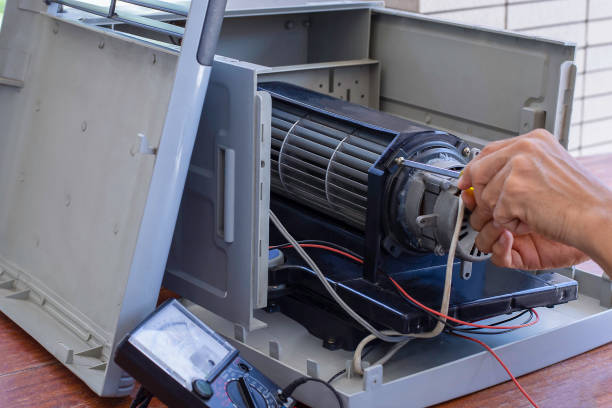
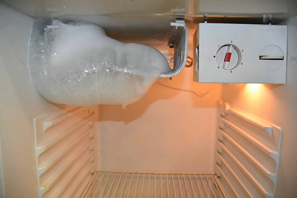

Drain issues
Freezer not making ice?We clear the problem and restore proper draining.
If water stays in the tub, the cycle stops before draining, or the freezer empties very slowly, we test the pump, hose path, and drain controls before we recommend a fix.
Drain-path checks
Pump, filter, hose, and standpipe testing.
Fast diagnosis
We isolate the drain blockage or pump issue quickly.
Clean repair
Clear estimate and tidy in-home service.
What we check
The main reasons a freezer does not drain
Drain problems can come from a blocked filter, weak pump, hose kink, or control issue. We test the full drain path before recommending parts.

Drain pump and outlet flow
We check whether a blockage, kink, or weak pump is
slowing drainage.
Drain command
If the control does not send the drain command
correctly, the cycle may stall with water inside.
Filter and hose path
We confirm whether debris in the filter or hose path
is restricting water flow.
Pressure switch and control logic
If the control misreads the water level, the cycle may
delay or skip draining.
Helpful note
Let us know if the freezer drains a little, hums at the
pump, or leaves water in the tub at the end. That helps us narrow the likely cause faster.
Our process
A clean workflow for drain repair
We trace the drain issue from the tub to the outlet path, explain what failed, and verify that the freezer drains properly before we finish.
1. Inspect
We check the pump, filter, hose path, and control timing.
2. Confirm
We isolate the blockage or failed drain component.
3. Repair
We restore normal draining performance with tidy workmanship.
4. Verify
We run a test cycle and confirm the freezer drains correctly again.
What you get
Clear estimate, targeted repair, and a freezer that drains
cleanly and completes cycles again.
Common causes
What usually causes a drain problem
Blocked drain filter
Debris in the filter can slow or stop water from leaving the
freezer.
Weak drain pump
A weak pump may hum or move only part of the water out.
Kinked or blocked hose
A hose restriction can leave water standing in the tub.
Standpipe or outlet restriction
A clog farther down the drain path can slow the full wash
cycle.
Pressure switch issue
A bad water-level reading can keep the freezer from draining at
the right time.
Drain control issue
The board may fail to command the pump correctly through the
cycle.
FAQ
Quick answers about drain repair
Yes. A blocked filter is one of the most common reasons
a freezer drains slowly or not at all.
Yes. A freezer can hum at the drain stage even when the
pump is too weak or jammed to move water.
Yes. If the control or pressure system misreads the
water level, the freezer may not drain at the right time.
Tell us if water stays in the tub, whether the freezer
hums during drain, and if the problem happens every cycle. That helps us narrow the likely fault
before we arrive.